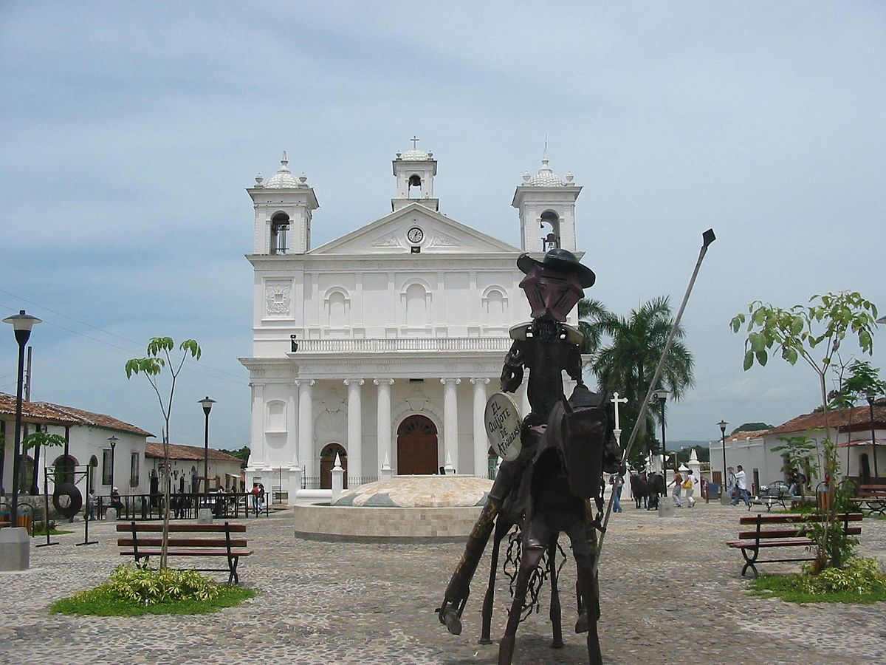
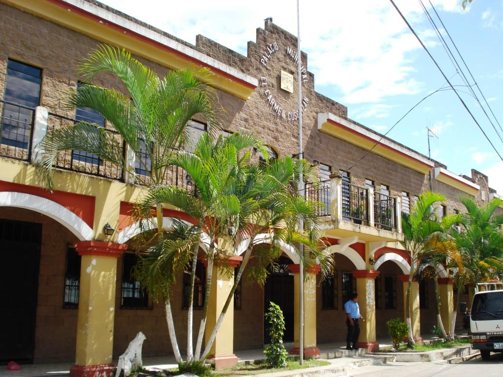
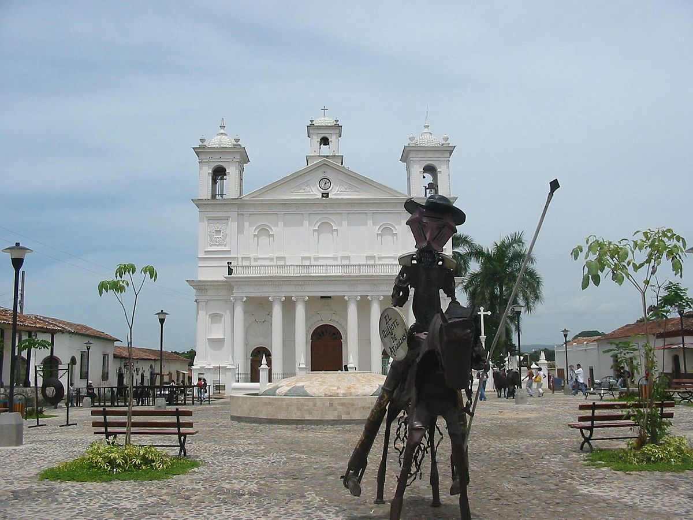
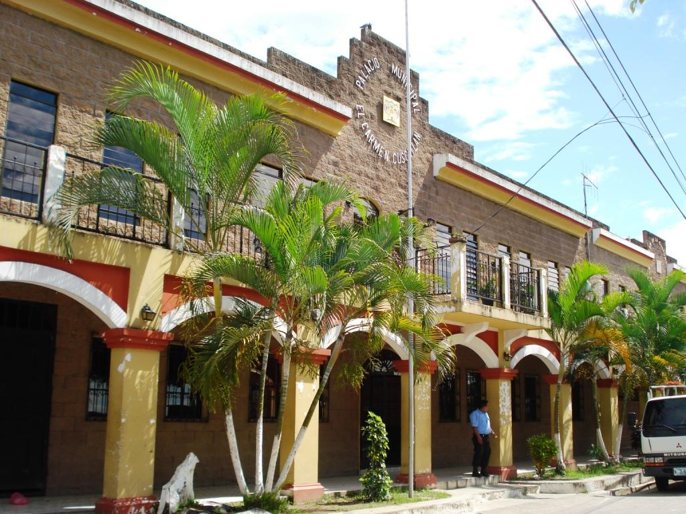

Historia de Cuscatlan
Cuscatlán fue fundado como departamento por decreto del Supremo Gobierno el 22 de mayo de 1835, y lo componían los distritos de Suchitoto, Cojutepeque, Ilobasco, Chalatenango, Tejutla y Opico, comprendiendo un total de 64 pueblos.
El decreto de 14 de febrero de 1855 dividió el departamento en dos: Chalatenango y el actual departamento de Cuscatlán. Finalmente, el 10 de febrero de 1873, se decretó la erección del departamento de Cabañas, a expensas del de Cuscatlán y de San Vicente.
La cabecera fue en un principio la ciudad de Suchitoto, pero el 12 de noviembre de 1861 se trasladó a Cojutepeque. Extension 292 mi²
Poblacion 216 446 hab.